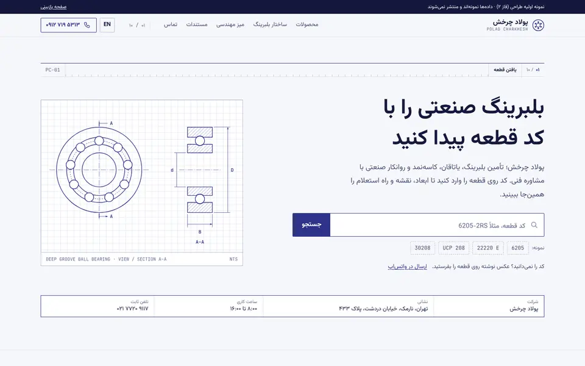
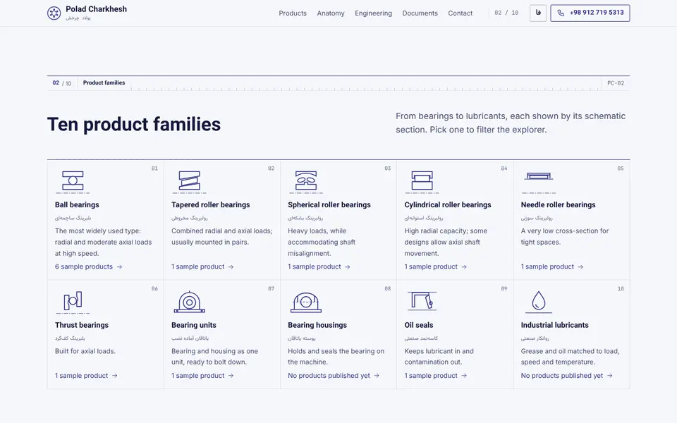
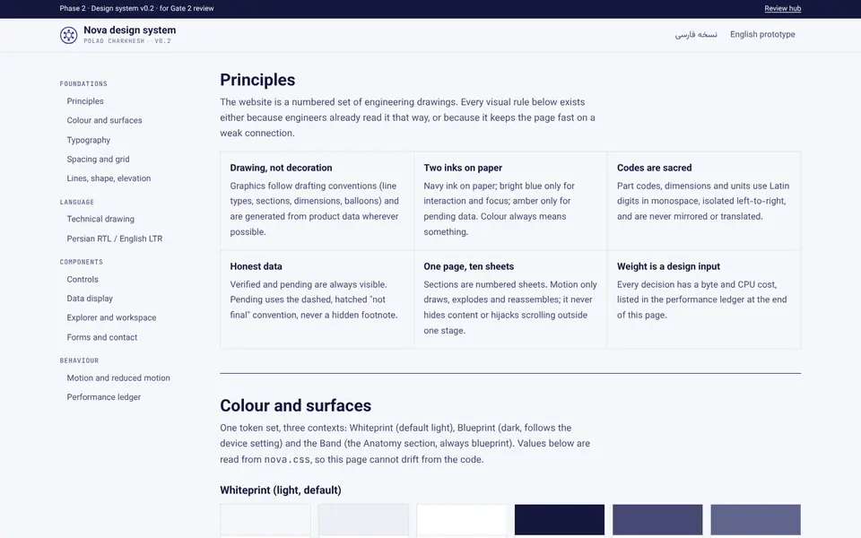
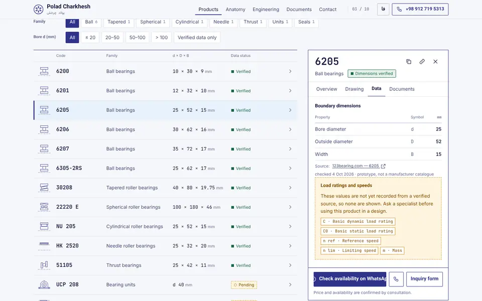
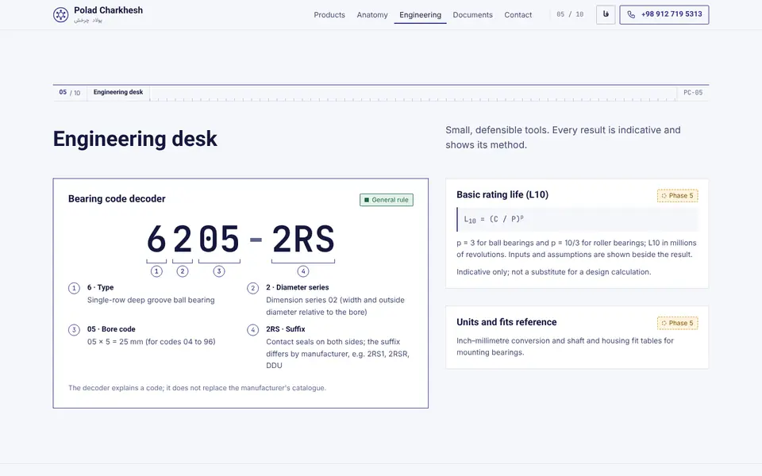
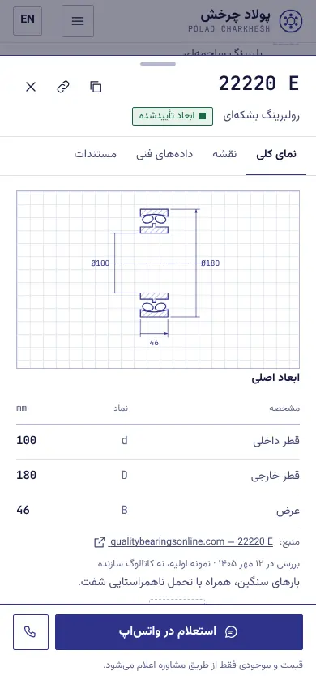
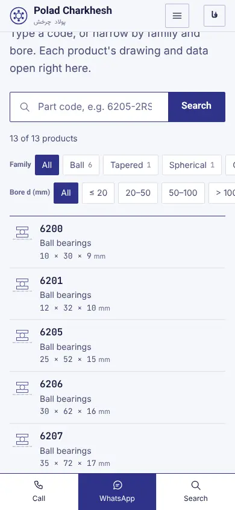
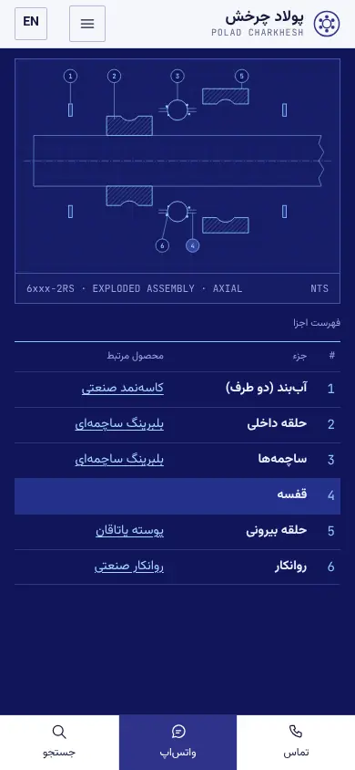
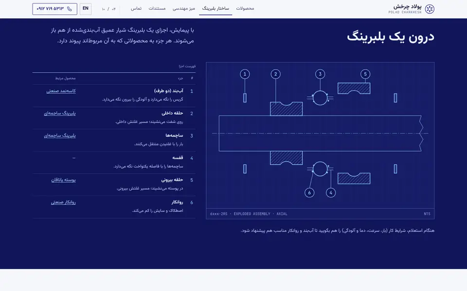
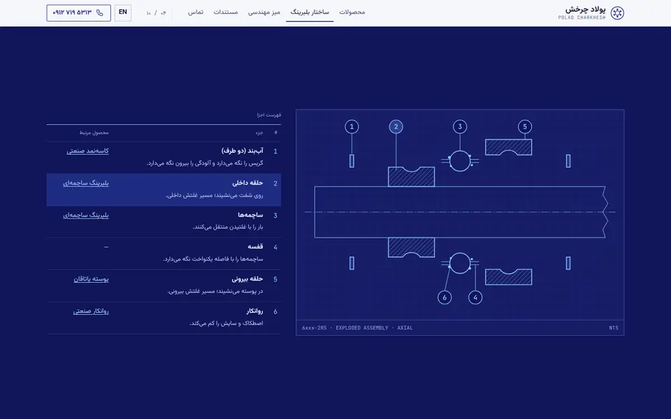

<title>Nova Phase 2 Review</title>
<style>
@font-face{font-family:"Vazirmatn";src:url(assets/fonts/vazirmatn-Regular-fa.woff2) format("woff2");font-weight:400;font-display:swap}
@font-face{font-family:"Vazirmatn";src:url(assets/fonts/vazirmatn-Bold-fa.woff2) format("woff2");font-weight:700;font-display:swap}
@font-face{font-family:"JetBrains Mono";src:url(assets/fonts/jbmono-400.woff2) format("woff2");font-weight:400;font-display:swap}
@font-face{font-family:"JetBrains Mono";src:url(assets/fonts/jbmono-600.woff2) format("woff2");font-weight:600;font-display:swap}
</style>
<link rel="stylesheet" href="assets/nova.css">
<style>
body { padding-bottom: 0; }
.hub { padding-block: 32px 96px; display: grid; grid-template-columns: minmax(0, 1fr); gap: 56px; }
.hub h1 { font-size: var(--fs-5); max-width: 22ch; }
.hub h2 { font-size: var(--fs-3); margin-bottom: 12px; }
.hub .lead { color: var(--ink-2); font-size: var(--fs-1); max-width: 64ch; margin-top: 12px; }
.status { display: flex; flex-wrap: wrap; gap: 8px 16px; margin-top: 16px; font-size: var(--fs--1); color: var(--ink-2); }
.cards { display: grid; grid-template-columns: repeat(3, minmax(0, 1fr)); gap: var(--col-gap); }
.card { display: grid; gap: 10px; align-content: start; border: 1.5px solid var(--line); background: var(--sheet); color: var(--ink); text-decoration: none; padding: 0 0 16px; }
.card img { width: 100%; height: auto; aspect-ratio: 16 / 10; object-fit: cover; object-position: top; border-bottom: 1px solid var(--line-3); background: var(--paper-2); }
.card b { font-size: var(--fs-1); padding-inline: 16px; }
.card span { color: var(--ink-2); font-size: var(--fs--1); padding-inline: 16px; }
.card:hover { background: var(--tint); }
.try { display: grid; grid-template-columns: repeat(2, minmax(0, 1fr)); gap: 0 var(--col-gap); counter-reset: t; list-style: none; padding: 0; margin: 0; border-top: 1.5px solid var(--line); }
.try li { padding: 12px 0 12px 36px; position: relative; border-bottom: 1px solid var(--line-3); font-size: var(--fs--1); }
.try li::before { counter-increment: t; content: counter(t); position: absolute; left: 0; top: 12px; width: 24px; height: 24px; border-radius: 50%; border: 1.2px solid var(--line); font-family: var(--mono); font-size: 12px; display: grid; place-items: center; color: var(--line); }
.gal { display: grid; gap: 24px; }
.gal__row { display: grid; grid-template-columns: repeat(var(--n, 2), minmax(0, 1fr)); gap: 16px; align-items: start; }
.gal figure { margin: 0; border: 1px solid var(--line-3); background: var(--sheet); }
.gal img { width: 100%; height: auto; display: block; }
.gal figcaption { font-size: .75rem; color: var(--ink-3); padding: 6px 10px; border-top: 1px solid var(--line-3); }
.tbl-wrap { overflow-x: auto; }
.tbl { width: 100%; font-size: .875rem; border-top: 1.5px solid var(--line); }
.tbl th, .tbl td { text-align: start; padding: 9px 12px 9px 0; border-bottom: 1px solid var(--line-3); vertical-align: top; }
.tbl thead th { font-size: .75rem; color: var(--ink-3); font-weight: 400; }
.tbl td.r { font-family: var(--mono); white-space: nowrap; }
.pass { color: var(--ok); font-weight: 700; }
.gate li { margin-bottom: 6px; }
.two { display: grid; grid-template-columns: 1fr 1fr; gap: var(--col-gap); }
@media (max-width: 899px) { .cards, .two, .try { grid-template-columns: minmax(0, 1fr); } .gal__row { --n: 2 !important; } }
@media (max-width: 499px) { .gal__row { --n: 1 !important; } }
</style>

<svg width="0" height="0" style="position:absolute" aria-hidden="true" focusable="false">
  <defs>
    <pattern id="hatch" width="6" height="6" patternUnits="userSpaceOnUse" patternTransform="rotate(45)"><rect width="6" height="6" style="fill:var(--sheet)"/><line x1="0" y1="0" x2="0" y2="6" class="hatch-ln"/></pattern>
    <marker id="ar" viewBox="0 0 10 10" refX="10" refY="5" markerWidth="7" markerHeight="7" orient="auto-start-reverse"><path d="M0 1.5L10 5L0 8.5z" class="dim-a"/></marker>
  </defs>
  <symbol id="logo" viewBox="0 0 32 32"><g fill="none" stroke="currentColor" stroke-width="1.6"><circle cx="16" cy="16" r="14.5"/><circle cx="16" cy="16" r="5"/></g><g fill="currentColor"><circle cx="16" cy="7.8" r="2"/><circle cx="23.1" cy="11.9" r="2"/><circle cx="23.1" cy="20.1" r="2"/><circle cx="16" cy="24.2" r="2"/><circle cx="8.9" cy="20.1" r="2"/><circle cx="8.9" cy="11.9" r="2"/></g></symbol>
  <!-- icons: 24 grid, 1.5 stroke -->
  <symbol id="i-search" viewBox="0 0 24 24"><circle cx="10.5" cy="10.5" r="6.5"/><path d="M15.5 15.5L20.5 20.5"/></symbol>
  <symbol id="i-close" viewBox="0 0 24 24"><path d="M6 6l12 12M18 6L6 18"/></symbol>
  <symbol id="i-phone" viewBox="0 0 24 24"><path d="M5 4h3.5l1.6 4-2 1.3a10 10 0 0 0 4.6 4.6l1.3-2 4 1.6V17a2 2 0 0 1-2 2A15 15 0 0 1 3 6a2 2 0 0 1 2-2z"/></symbol>
  <symbol id="i-chat" viewBox="0 0 24 24"><path d="M4.5 19.5l1.2-3.6A8 8 0 1 1 8.3 18.4z"/><path d="M9 10.5h6M9 13.5h4"/></symbol>
  <symbol id="i-arrow" viewBox="0 0 24 24"><path d="M5 12h14M13 6l6 6-6 6"/></symbol>
  <symbol id="i-chev" viewBox="0 0 24 24"><path d="M9.5 6l6 6-6 6"/></symbol>
  <symbol id="i-copy" viewBox="0 0 24 24"><rect x="8.5" y="8.5" width="11" height="11"/><path d="M5 15.5V4.5h10.5"/></symbol>
  <symbol id="i-link" viewBox="0 0 24 24"><path d="M10 14a4 4 0 0 0 5.7 0l3-3a4 4 0 0 0-5.7-5.7l-1 1M14 10a4 4 0 0 0-5.7 0l-3 3a4 4 0 0 0 5.7 5.7l1-1"/></symbol>
  <symbol id="i-doc" viewBox="0 0 24 24"><path d="M6.5 3h7.5l4 4v14H6.5zM14 3v4h4M9 12h6M9 15.5h6"/></symbol>
  <symbol id="i-ext" viewBox="0 0 24 24"><path d="M14 5h5v5M19 5l-8 8M17 14v5H5V7h5"/></symbol>
  <symbol id="i-menu" viewBox="0 0 24 24"><path d="M4 7h16M4 12h16M4 17h16"/></symbol>
  <symbol id="i-pin" viewBox="0 0 24 24"><path d="M12 21s-7-6.2-7-11a7 7 0 0 1 14 0c0 4.8-7 11-7 11z"/><circle cx="12" cy="10" r="2.5"/></symbol>
  <symbol id="i-clock" viewBox="0 0 24 24"><circle cx="12" cy="12" r="8.5"/><path d="M12 7.5V12l3 2"/></symbol>
  <symbol id="i-send" viewBox="0 0 24 24"><path d="M4 12l16-7-5 15-3-6z M12 14l3-4"/></symbol>
  <!-- family glyphs: schematic half sections, 64x48, centre line at the bottom -->
  <symbol id="g-ball" viewBox="0 0 64 48"><g fill="none" stroke="currentColor" stroke-width="1.5"><path d="M2 44.5h60" stroke-width=".8" stroke-dasharray="8 2 1.5 2"/><rect x="14" y="6" width="36" height="9"/><rect x="14" y="29" width="36" height="9"/><circle cx="32" cy="22" r="7.5" style="fill:var(--sheet)"/></g></symbol>
  <symbol id="g-tapered" viewBox="0 0 64 48"><g fill="none" stroke="currentColor" stroke-width="1.5" stroke-linejoin="round"><path d="M2 44.5h60" stroke-width=".8" stroke-dasharray="8 2 1.5 2"/><path d="M14 6h36v8L14 20z"/><path d="M14 38h36V27l-36 6z"/><path d="M18 22l28-5.5v9L18 31z" style="fill:var(--sheet)"/></g></symbol>
  <symbol id="g-spherical" viewBox="0 0 64 48"><g fill="none" stroke="currentColor" stroke-width="1.5"><path d="M2 44.5h60" stroke-width=".8" stroke-dasharray="8 2 1.5 2"/><path d="M14 6h36v8A35 35 0 0 0 14 14z"/><path d="M14 38h36v-9H35v-4h-6v4H14z"/><ellipse cx="23.5" cy="21" rx="7" ry="3.6" transform="rotate(-16 23.5 21)" style="fill:var(--sheet)"/><ellipse cx="40.5" cy="21" rx="7" ry="3.6" transform="rotate(16 40.5 21)" style="fill:var(--sheet)"/></g></symbol>
  <symbol id="g-cylindrical" viewBox="0 0 64 48"><g fill="none" stroke="currentColor" stroke-width="1.5"><path d="M2 44.5h60" stroke-width=".8" stroke-dasharray="8 2 1.5 2"/><path d="M14 6h36v12h-4v-5H18v5h-4z"/><rect x="19" y="13" width="26" height="11" style="fill:var(--sheet)"/><rect x="14" y="24" width="36" height="14"/></g></symbol>
  <symbol id="g-needle" viewBox="0 0 64 48"><g fill="none" stroke="currentColor" stroke-width="1.5"><path d="M2 44.5h60" stroke-width=".8" stroke-dasharray="8 2 1.5 2"/><path d="M12 9h40v3H12zM12 12v6M52 12v6"/><rect x="16" y="13" width="32" height="5" style="fill:var(--sheet)"/><path d="M6 19.5h52" stroke-width=".9"/></g></symbol>
  <symbol id="g-thrust" viewBox="0 0 64 48"><g fill="none" stroke="currentColor" stroke-width="1.5"><path d="M2 44.5h60" stroke-width=".8" stroke-dasharray="8 2 1.5 2"/><path d="M17 38V12h8v8.5a6.5 6.5 0 0 0 0 9V38z"/><path d="M47 6v26h-8v-8.5a6.5 6.5 0 0 0 0-9V6z"/><circle cx="32" cy="22" r="6.5" style="fill:var(--sheet)"/></g></symbol>
  <symbol id="g-unit" viewBox="0 0 64 48"><g fill="none" stroke="currentColor" stroke-width="1.5"><path d="M5 42.5h54v-5H5z"/><path d="M14 37.5V25a18 18 0 0 1 36 0v12.5"/><circle cx="32" cy="25" r="11"/><circle cx="32" cy="25" r="5"/><path d="M32 7V3.5"/><circle cx="10" cy="40" r="1.2"/><circle cx="54" cy="40" r="1.2"/></g></symbol>
  <symbol id="g-housing" viewBox="0 0 64 48"><g fill="none" stroke="currentColor" stroke-width="1.5"><path d="M5 42.5h54v-5H5z"/><path d="M11 37.5V24c0-9 9.4-16 21-16s21 7 21 16v13.5"/><path d="M8 24h48" stroke-width=".9" stroke-dasharray="4 2"/><path d="M17 13v11M47 13v11"/><circle cx="32" cy="24" r="9.5"/></g></symbol>
  <symbol id="g-seal" viewBox="0 0 64 48"><g fill="none" stroke="currentColor" stroke-width="1.5" stroke-linejoin="round"><path d="M6 6.5h52M6 38.5h52" stroke-width=".9"/><path d="M14 7h30v4.5H18.5V33H14z"/><path d="M44 11.5l5 22.5-5 1.5-6-20z" style="fill:var(--sheet)"/><circle cx="47.5" cy="26" r="2.6"/></g></symbol>
  <symbol id="g-lubricant" viewBox="0 0 64 48"><g fill="none" stroke="currentColor" stroke-width="1.5" stroke-linejoin="round"><path d="M32 5c-6 9-11 15-11 21.5a11 11 0 0 0 22 0C43 20 38 14 32 5z"/><path d="M26.5 28a5.5 5.5 0 0 0 5.5 5.5"/><path d="M8 43.5h48" stroke-width=".9"/></g></symbol>
</svg><header class="bar"><div class="wrap bar__in">
  <a class="brand" href="#top"><svg aria-hidden="true"><use href="#logo"/></svg><span><b>PoladCharkhesh-Nova</b><small>Phase 2 · Gate 2 review</small></span></a>
  <nav class="bar__nav" aria-label="Review sections"><a href="#open">Prototypes</a><a href="#screens">Key screens</a><a href="#perf">Performance</a><a href="#gate">Gate 2</a></nav>
</div></header>

<main class="wrap hub" id="top">
  <section>
    <div class="sheethead" aria-hidden="true"><span class="sheethead__no">P2</span><span class="sheethead__name">Design system and visual prototypes</span><span class="sheethead__ticks"></span><span class="sheethead__ref">GATE 2</span></div>
    <h1>The Drawing Sheet system, built and measured</h1>
    <p class="lead">Working browser prototypes of the public site in Persian (RTL) and English (LTR), built with the production approach: one template, structured content, static output, hand-written CSS and two small scripts. Nothing here is the production application or database; product data is a 13-item sample for layout only.</p>
    <div class="status"><span class="badge badge--ok"><span>Gate 1 approved with C1–C4</span></span><span class="badge badge--pending"><span>Gate 2 awaiting your review</span></span><span>Checked in Chromium · axe-core: 0 WCAG 2.1 AA violations · no horizontal scroll at 390 px</span></div>
  </section>

  <section id="open">
    <h2>Open the prototypes</h2>
    <div class="cards">
      <a class="card" href="fa.html"><b lang="fa">نسخه فارسی (RTL)</b><span>Persian-first page as it would ship on poladcharkhesh.ir</span></a>
      <a class="card" href="en.html"><b>English version (LTR)</b><span>English-first page as it would ship on poladcharkhesh.com</span></a>
      <a class="card" href="system.html"><b>Design system v0.2</b><span>Tokens, type, grid, drawing language, components, motion, RTL rules, performance ledger</span></a>
    </div>
  </section>

  <section>
    <h2>Ten things to try</h2>
    <ol class="try">
      <li>Type <span class="mono">6205</span> in the first search box and press Enter: the explorer opens the product directly.</li>
      <li>On the Persian page, type <span lang="fa">۶۲۰۵</span> with Persian digits: it still matches.</li>
      <li>Search a code that isn't listed, e.g. <span class="mono">6310</span>: the no-result panel carries it into WhatsApp.</li>
      <li>Open <span class="mono">UCP 208</span> or <span class="mono">TC 25×42×7</span> to see the "technical data pending" treatment.</li>
      <li>Switch the workspace tabs with the arrow keys; in Persian, Left moves forward.</li>
      <li>Scroll slowly through "Inside a bearing": the bearing comes apart and the parts list follows.</li>
      <li>Switch language from inside an open product: the other page opens on the same product.</li>
      <li>Narrow the window below 900 px: action dock, menu, and the workspace as a bottom sheet.</li>
      <li>Turn on reduced motion in your OS: the assembly shows exploded and static, nothing animates.</li>
      <li>Switch your OS to dark mode: the Blueprint theme comes from the same tokens.</li>
    </ol>
  </section>

  <section id="screens">
    <h2>Key screens</h2>
    <div class="gal">
      <div class="gal__row" style="--n:2">
        <figure><figcaption>Explorer + workspace, Persian desktop (workspace docks at the inline end)</figcaption></figure>
        <figure><figcaption>Data tab: sourced dimensions, pending load ratings</figcaption></figure>
      </div>
      <div class="gal__row" style="--n:2">
        <figure><figcaption>Exploded Assembly mid-scroll, with the parts list following</figcaption></figure>
        <figure><figcaption>Engineering desk: code decoder (general rule) and Phase 5 tools</figcaption></figure>
      </div>
      <div class="gal__row" style="--n:2">
        <figure><figcaption>Sheet 10: inquiry form, verified contact channels</figcaption></figure>
        <figure><figcaption>Blueprint theme (device dark mode)</figcaption></figure>
      </div>
      <div class="gal__row" style="--n:4">
        <figure><figcaption>Mobile, Persian: first screen + action dock</figcaption></figure>
        <figure><figcaption>Mobile: product as a bottom sheet</figcaption></figure>
        <figure><figcaption>Mobile, English: stacked result rows</figcaption></figure>
        <figure><figcaption>Mobile: Exploded Assembly</figcaption></figure>
      </div>
      <div class="gal__row" style="--n:2">
        <figure><figcaption>Reduced motion: static exploded drawing, no sticky track</figcaption></figure>
        <figure><figcaption>Fallback path (no scroll timelines, e.g. Firefox): same result via a 1 KB driver</figcaption></figure>
      </div>
    </div>
  </section>

  <section id="perf">
    <h2>Performance, measured against the Gate 1 budget</h2>
    <p class="lead">Chromium, 390 px phone viewport, cache disabled, 4× CPU slowdown, served with gzip like shared hosting. "Slow 4G" is 1.6 Mbps with 150 ms latency; "3G-class" is 400 kbps with 400 ms.</p>
    <div class="tbl-wrap"><table class="tbl">
      <thead><tr><th>Metric</th><th>Budget (Gate 1)</th><th>fa · Slow 4G</th><th>fa · 3G-class</th><th>en · Slow 4G</th><th>en · 3G-class</th></tr></thead>
      <tbody>
        <tr><td>First-view transfer</td><td class="r">≤ 120 KB</td><td class="r pass">73.6 KB</td><td class="r pass">73.6 KB</td><td class="r pass">62.3 KB</td><td class="r pass">62.3 KB</td></tr>
        <tr><td>Requests</td><td class="r">≤ 8</td><td class="r pass">7</td><td class="r pass">7</td><td class="r pass">8</td><td class="r pass">8</td></tr>
        <tr><td>HTML (incl. inline SVG)</td><td class="r">≤ 30 KB</td><td class="r pass">13.4 KB</td><td class="r pass">13.4 KB</td><td class="r pass">12.4 KB</td><td class="r pass">12.4 KB</td></tr>
        <tr><td>CSS</td><td class="r">≤ 14 KB</td><td class="r pass">9.1 KB</td><td class="r pass">9.1 KB</td><td class="r pass">9.1 KB</td><td class="r pass">9.1 KB</td></tr>
        <tr><td>JS, initial</td><td class="r">≤ 12 KB</td><td class="r pass">3.6 KB</td><td class="r pass">3.6 KB</td><td class="r pass">3.6 KB</td><td class="r pass">3.6 KB</td></tr>
        <tr><td>Fonts</td><td class="r">≤ 60 KB</td><td class="r pass">47.5 KB</td><td class="r pass">47.5 KB</td><td class="r pass">37.2 KB</td><td class="r pass">37.2 KB</td></tr>
        <tr><td>LCP</td><td class="r">≤ 1.8 s</td><td class="r pass">0.85 s</td><td class="r pass">1.78 s</td><td class="r pass">0.76 s</td><td class="r pass">1.67 s</td></tr>
        <tr><td>CLS</td><td class="r">≤ 0.05</td><td class="r pass">0.000</td><td class="r pass">0.001</td><td class="r pass">0.000</td><td class="r pass">0.001</td></tr>
        <tr><td>Interaction latency (tap, type, tab)</td><td class="r">INP ≤ 150 ms</td><td class="r pass">48 ms</td><td class="r pass">48 ms</td><td class="r pass">48 ms</td><td class="r pass">40 ms</td></tr>
        <tr><td>Loaded on first product open</td><td class="r">≤ 15 KB</td><td class="r pass">6.3 KB</td><td class="r pass">6.3 KB</td><td class="r pass">6.3 KB</td><td class="r pass">6.3 KB</td></tr>
      </tbody></table></div>
    <p class="lead" style="font-size:var(--fs--1)">Lab numbers from one browser engine; field numbers from real phones in Iran come after deployment. Hover-only events (pointerover) are excluded from interaction latency, as they are from INP. Per-decision costs are in the <a href="system.html#perf">performance ledger</a>.</p>
  </section>

  <section id="gate">
    <h2>Gate 2 checklist</h2>
    <div class="tbl-wrap"><table class="tbl gate">
      <thead><tr><th>#</th><th>Item</th><th>What's proposed</th><th>Where to see it</th></tr></thead>
      <tbody>
        <tr><td class="r">G2-1</td><td>Visual language</td><td>Drawing Sheet: paper and navy ink, drafting conventions, ten numbered sheets, one blueprint band for Anatomy</td><td><a href="fa.html">fa</a> · <a href="en.html">en</a></td></tr>
        <tr><td class="r">G2-2</td><td>Typography</td><td>Vazirmatn 400/700 + JetBrains Mono 400/600, subset; type scale; Latin digits for codes, Persian digits for prose and phones; Solar Hijri dates on fa</td><td><a href="system.html#type">system#type</a></td></tr>
        <tr><td class="r">G2-3</td><td>Colour and surfaces</td><td>Whiteprint default, Blueprint dark from the device setting, measured contrast</td><td><a href="system.html#color">system#color</a></td></tr>
        <tr><td class="r">G2-4</td><td>Spacing, grid, breakpoints</td><td>4 px base; 12 columns, 1240 px; breakpoints 1100 / 900 / 700 / 600</td><td><a href="system.html#space">system#space</a></td></tr>
        <tr><td class="r">G2-5</td><td>Technical drawing language</td><td>Line types, sections, dimensions, balloons, title blocks; 10 family glyphs; drawings generated from dimensions</td><td><a href="system.html#drawing">system#drawing</a></td></tr>
        <tr><td class="r">G2-6</td><td>Product Explorer</td><td>Static list + family / bore / verified filters, match highlighting, exact-match opens, no-result to WhatsApp</td><td><a href="en.html#explorer">en#explorer</a></td></tr>
        <tr><td class="r">G2-7</td><td>Product Workspace</td><td>Docked panel (desktop) / bottom sheet (mobile); Overview · Drawing · Data · Documents; sticky WhatsApp / Call / Inquiry</td><td><a href="fa.html#p-6205">fa#6205</a></td></tr>
        <tr><td class="r">G2-8</td><td>RTL / LTR rules</td><td>Mirror layout, never drawings or codes; logical properties; isolation; search normalisation</td><td><a href="system.html#bidi">system#bidi</a></td></tr>
        <tr><td class="r">G2-9</td><td>Drawing Set narrative</td><td>Sheet heads, scroll-driven draw-on, raceway on the process steps</td><td>Both pages</td></tr>
        <tr><td class="r">G2-10</td><td>Exploded Assembly</td><td>One sticky stage (260 vh desktop, 200 vh mobile), 6-part bill of materials linked to families</td><td><a href="fa.html#anatomy">fa#anatomy</a></td></tr>
        <tr><td class="r">G2-11</td><td>Reduced motion</td><td>No animation, no sticky track, static exploded drawing</td><td>OS setting</td></tr>
        <tr><td class="r">G2-12</td><td>Performance</td><td>All Gate 1 budgets met in lab measurements (table above)</td><td><a href="#perf">#perf</a></td></tr>
      </tbody></table></div>
  </section>

  <section>
    <h2>Decisions that need your input</h2>
    <div class="tbl-wrap"><table class="tbl">
      <thead><tr><th>#</th><th>Question</th><th>Recommendation</th></tr></thead>
      <tbody>
        <tr><td class="r">Q1</td><td>Ship the Blueprint dark theme in v1?</td><td>Yes, automatic from the device setting, no toggle. Cost ≈ 0.6 KB CSS plus one extra QA pass.</td></tr>
        <tr><td class="r">Q2</td><td>Phone numbers on Persian pages in Persian or Latin digits?</td><td>Persian digits on screen, Latin digits inside <code>tel:</code> and WhatsApp links (as built).</td></tr>
        <tr><td class="r">Q3</td><td>Logo</td><td>The prototype uses a placeholder concentric mark. Please supply the real logo as SVG; it replaces one <code>&lt;symbol&gt;</code>.</td></tr>
        <tr><td class="r">Q4</td><td>Admin Control Center visuals</td><td>Not in your Phase 2 focus list, so not drawn here. Proposal: the admin reuses these tokens in a plain utilitarian layout; wireframes come at the start of Phase 4b.</td></tr>
        <tr><td class="r">Q5</td><td>Copy</td><td>All prototype text is my draft for layout. Final Persian and English copy becomes CMS content; please mark anything you want changed.</td></tr>
      </tbody></table></div>
  </section>

  <section class="two">
    <div>
      <h2>Not done in Phase 2</h2>
      <p class="lead" style="font-size:var(--fs--1)">No application, database, admin, Publish Engine or real inquiry handling; the form only validates. Engineering tools are previews (Phase 5). Product data is a 13-item sample whose boundary dimensions were checked against public distributor listings; load ratings are deliberately empty. Superdesign and frontend-design were not available in this session, so exploration was done directly in code; testing used Chromium only, with Firefox's fallback path simulated.</p>
    </div>
    <div>
      <h2>Files</h2>
      <p class="lead" style="font-size:var(--fs--1)">Prototype source (template, strings, sample catalogue, build script) and the built pages are saved in your project folder under <span class="mono">design/phase2/</span>. The CSS file is the starting point for the production stylesheet.</p>
    </div>
  </section>
</main>